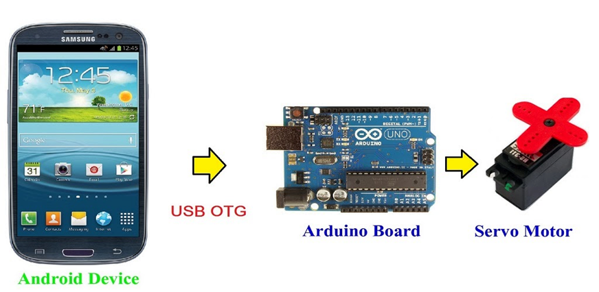

Temas:
- Conectar convertidor OTG al celular.
- Cargar el proyecto creado en Arduino Studio.
- Comprobar funcionamiento en la plaqueta Arduino UNO.
- Ventajas y desventajas.
Conectar convertidor OTG al celular
- Abrir la aplicación de Arduino Studio (Mobile).
- Conectar el extremo de conexión tipo C o V8 del convertidor OTG a la entrada de carga del smartphone.
- Conectar el extremo de USB hembra del convertidor OTG al cable de la plaqueta Arduino Uno.
- Conectar.
Ventajas y desventajas
Ventajas:
Amplía la conectividad: Un convertidor OTG te permite conectar una amplia gama de dispositivos USB a tu dispositivo Android
Mejora el entretenimiento: Conecta dispositivos USB para disfrutar de contenido multimedia.
Portátil y compacto: Los conversores OTG suelen ser pequeños y ligeros, lo que los hace fáciles de llevar contigo a cualquier lugar.
Desventajas:
Velocidad de transferencia: La velocidad de transferencia de datos a través de un convertidor OTG puede ser más lenta que la de una conexión USB directa.
Compatibilidad: No todos los dispositivos USB son compatibles con los conversores OTG.
Seguridad: Al conectar dispositivos externos a tu dispositivo Android, aumenta el riesgo de que se introduzcan virus o malware.